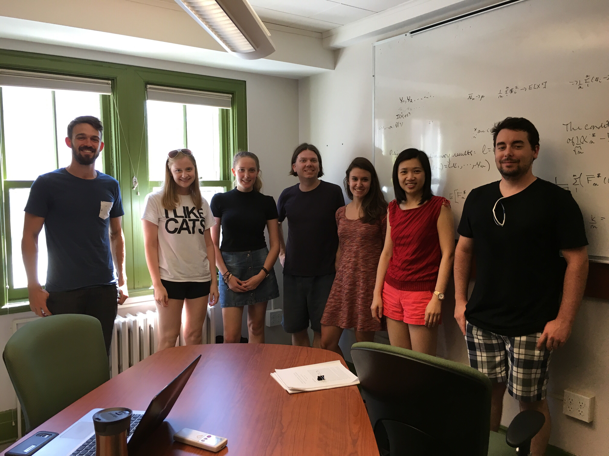

Former lab members

In fact, we all like cats.
- Yuyi Xue (visiting student)
- Laura Bruce (undergrad)
- Iraj Yadegari (postdoc)
- Juliane Bruck (undergrad)
- Marcel Miron-Celis (M.Sc.)
- Emily Chen (undergrad)
- Christian Costris-Vas (undergrad)
- Karianne Belanger-Sauve (undergrad)
- Qiming Zhu (undergrad)
- Yhesaem Park (M.Sc.)
- Emily Thompson (M.Sc.)
- Lauren MacKenzie (M.Sc.)
- Stephanie Abo (undergrad)
- Aili Wang (visiting professor)
- Carol Lopuz (undergrad)
- Feng Han (PhD)
- Patrick Saunders-Hastings (PhD)
- Bryson Hayes (undergrad)
- Mohammed Hussen (undergrad)
- Emma Veilleux-Gravel (undergrad)
- Stephanie Wiafe (undergrad)
- Michela Panarella (undergrad)
- Nyuk Sian Chong (PhD)
- Andrew Tomayer (MSc)
- Marc Beauparlant (MSc)
- Can Chen (visiting student)
- Manal Alharbi (MSc)
- Kevin Church (MSc)
- Danny Salem (undergrad)
- Rachelle Miron (PhD)
- Long Truong (undergrad)
- Carley Rogers (MSc)
- Cameron Browne (postdoc)
- Tingting Zhao (visiting student)
- Matthew Peacock (undergrad)
- Yasmine Samia (PhD)
- Mo'tassem Al-Arydah (postdoc)
- Tiffany Lam (undergrad)
- Tzvia Iljon (undergrad)
- Rolina van Gaalen (PHAC student)
- Valery Ross (undergrad)
- Jing Li (postdoc)
- Alison Kealey (undergrad)
- Jun Mao (research assistant)
- Yaping Ren (visiting student)
- Bernhard Konrad (visiting student)
- Oleksiy Antoshko (undergrad)
- Nadine Enright (MSc)
- Marco Llamazares (undergrad, MSc)